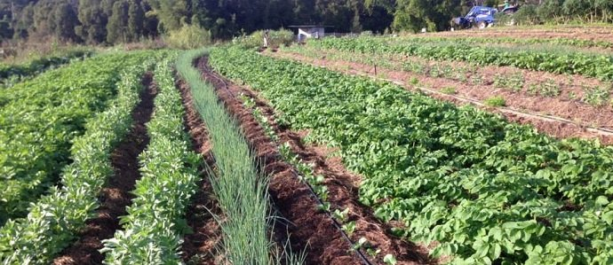
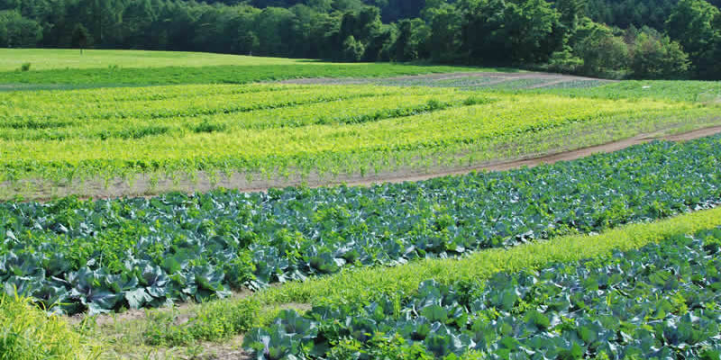
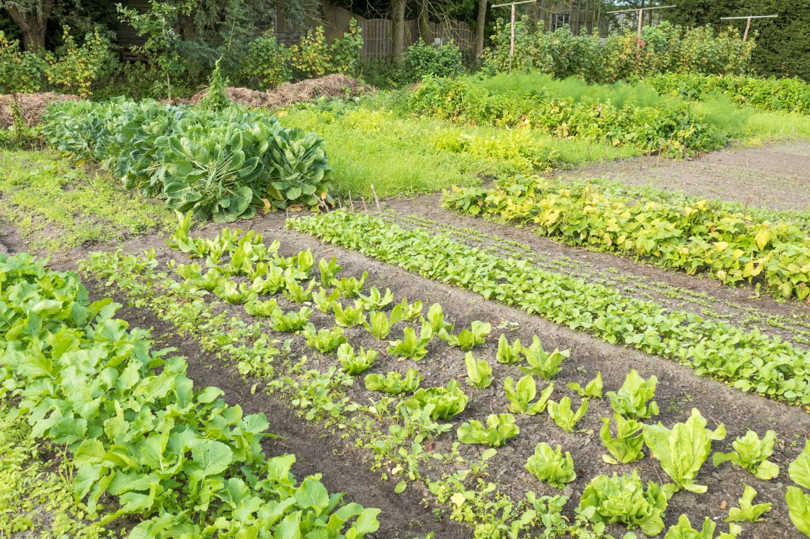
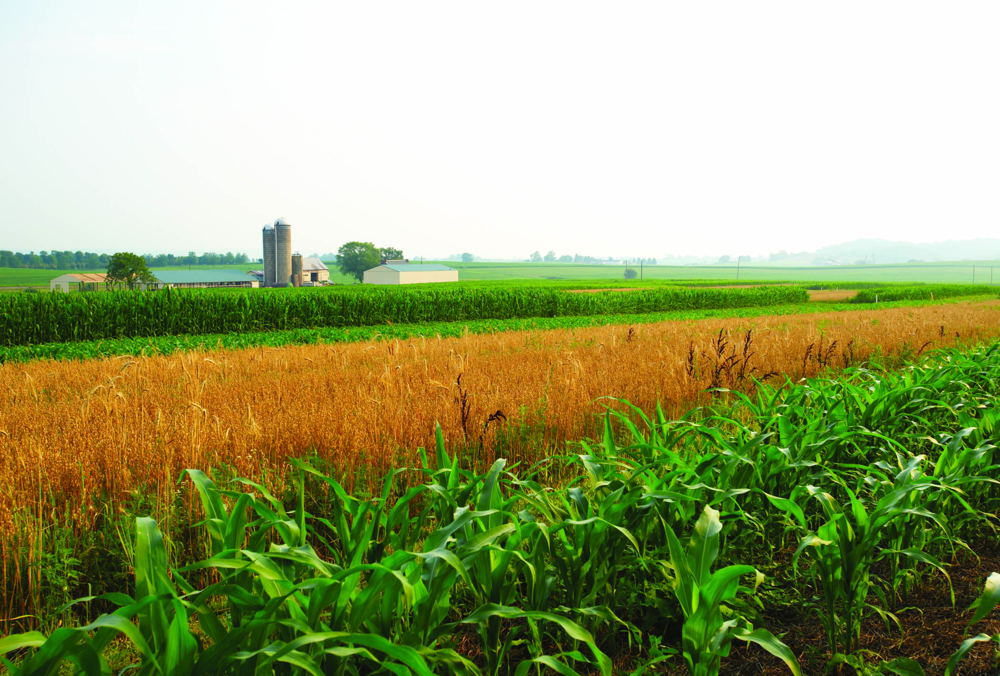
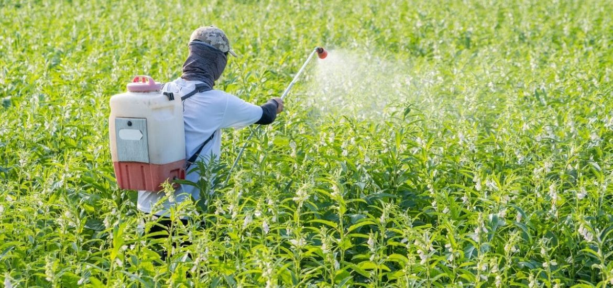

InFarmo
InFarmoCrop rotation is the practice of growing a series of different types of crops in the same area across a sequence of growing seasons. It reduces reliance on one set of nutrients, pest and weed pressure, and the probability of developing resistant pest and weeds.  Growing the same crop in the same place for many years in a row gradually depletes the soil of certain nutrients and selects for a highly competitive pest and weed community. Without balancing nutrient use and diversifying pest and weed communities, the productivity of monocultures is highly dependent on external inputs. Conversely, a well designed crop rotation can reduce the need for synthetic fertilizers and herbicides by better using ecosystem services from a diverse set of crops. Additionally, crop rotations can improve soil structure and organic matter, which reduces erosion and increases farm system resilience.
Many crops which are critical for the market, like vegetables, are row crops (that is, grown in tight rows).[7] While often the most profitable for farmers, these crops are more taxing on the soil.[7] Row crops typically have low biomass and shallow roots: this means the plant contributes low residue to the surrounding soil and has limited effects on structure.[9] With much of the soil around the plant exposed to disruption by rainfall and traffic, fields with row crops experience faster break down of organic matter by microbes, leaving fewer nutrients for future plants.[9] In short, while these crops may be profitable for the farm, they are nutrient depleting. Crop rotation practices exist to strike a balance between short-term profitability and long-term productivity.[8]
Many crops which are critical for the market, like vegetables, are row crops (that is, grown in tight rows).[7] While often the most profitable for farmers, these crops are more taxing on the soil.[7] Row crops typically have low biomass and shallow roots: this means the plant contributes low residue to the surrounding soil and has limited effects on structure.[9] With much of the soil around the plant exposed to disruption by rainfall and traffic, fields with row crops experience faster break down of organic matter by microbes, leaving fewer nutrients for future plants.[9] In short, while these crops may be profitable for the farm, they are nutrient depleting. Crop rotation practices exist to strike a balance between short-term profitability and long-term productivity.[8]
Multiple cropping systems, such as intercropping or companion planting, offer more diversity and complexity within the same season or rotation. An example of companion planting is the three sisters, the inter-planting of corn with pole beans and vining squash or pumpkins. In this system, the beans provide nitrogen; the corn provides support for the beans and a "screen" against squash vine borer; the vining squash provides a weed suppressive canopy and a discouragement for corn-hungry raccoons.[6] Double-cropping is common where two crops, typically of different species, are grown sequentially in the same growing season, or where one crop (e.g. vegetable) is grown continuously with a cover crop (e.g. wheat).[5] This is advantageous for small farms, who often cannot afford to leave cover crops to replenish the soil for extended periods of time, as larger farms can.[8] When multiple cropping is implemented on small farms, these systems can maximize benefits of crop rotation on available land resources.[8]
Crop rotation is a required practice, in the United States, for farm seeking organic certification.[15] The “Crop Rotation Practice Standard” for the National Organic Program under the U.S. Code of Federal Regulations, section §205.205, states Farmers are required to implement a crop rotation that maintains or builds soil organic matter, works to control pests, manages and conserves nutrients, and protects against erosion. Producers of perennial crops that aren’t rotated may utilize other practices, such as cover crops, to maintain soil health.[9] In addition to lowering the need for inputs (by controlling for pests and weeds and increasing available nutrients), crop rotation helps organic growers increase the amount of biodiversity their farms.[9] Biodiversity is also a requirement of organic certification, however, there are no rules in place to regulate or reinforce this standard.[9] Increasing the biodiversity of crops has beneficial effects on the surrounding ecosystem and can host a greater diversity of fauna, insects, and beneficial microorganism in the soil.[9] Some studies point to increased nutrient availability from crop rotation under organic systems compared to conventional practices as organic practices are less likely to inhibit of beneficial microbes in soil organic matter.[16] While multiple cropping and intercropping benefit from many of the same principals as crop rotation, they do not satisfy the requirement under the NOP.[9]
The use of different species in rotation allows for increased soil organic matter (SOM), greater soil structure, and improvement of the chemical and biological soil environment for crops. With more SOM, water infiltration and retention improves, providing increased drought tolerance and decreased erosion. Soil organic matter is a mix of decaying material from biomass with active microorganisms. Crop rotation, by nature, increases exposure to biomass from sod, green manure, and a various other plant debris. The reduced need for intensive tillage under crop rotation allows biomass aggregation to lead to greater nutrient retention and utilization, decreasing the need for added nutrients.[7] With tillage, disruption and oxidation of soil creates a less conducive environment for diversity and proliferation of microorganisms in the soil. These microorganisms are what make nutrients available to plants. So, where "active" soil organic matter is a key to productive soil, soil with low microbial activity provides significantly fewer nutrients to plants; this is true even though the quantity of biomass left in the soil may be the same. Soil microorganisms also decrease pathogen and pest activity through competition. In addition, plants produce root exudates and other chemicals which manipulate their soil environment as well as their weed environment. Thus rotation allows increased yields from nutrient availability but also alleviation of allelopathy and competitive weed environments.[citation needed]
Integrating certain crops, especially cover crops, into crop rotations is of particular value to weed management. These crops crowd out weed through competition. In addition, the sod and compost from cover crops and green manure slows the growth of what weeds are still able to make it through the soil, giving the crops further competitive advantage. By slowing the growth and proliferation of weeds while cover crops are cultivated, farmers greatly reduce the presence of weeds for future crops, including shallow rooted and row crops, which are less resistant to weeds. Cover crops are, therefore, considered conservation crops because they protect otherwise fallow land from becoming overrun with weeds.[21] This system has advantages over other common practices for weeds management, such as tillage. Tillage is meant to inhibit growth of weeds by overturning the soil; however, this has a countering effect of exposing weed seeds that may have gotten buried and burying valuable crop seeds. Under crop rotation, the number of viable seeds in the soil is reduced through the reduction of the weed population.  In addition to their negative impact on crop quality and yield, weeds can slow down the harvesting process. Weeds make farmers less efficient when harvesting, because weeds like bindweeds, and knotgrass, can become tangled in the equipment, resulting in a stop-and-go type of harvest.[22]
While crop rotation requires a great deal of planning, crop choice must respond to a number of fixed conditions (soil type, topography, climate, and irrigation) in addition to conditions that may change dramatically from year to the next (weather, market, labor supply).[8] In this way, it is unwise to plan crops years in advance. Improper implementation of a crop rotation plan may lead to imbalances in the soil nutrient composition or a buildup of pathogens affecting a critical crop.[8] The consequences of faulty rotation may take years to become apparent even to experienced soil scientists and can take just as long to correct.[8] Many challenges exist within the practices associated with crop rotation. For example, green manure from legumes can lead to an invasion of snails or slugs and the decay from green manure can occasionally suppress the growth of other crops.[11